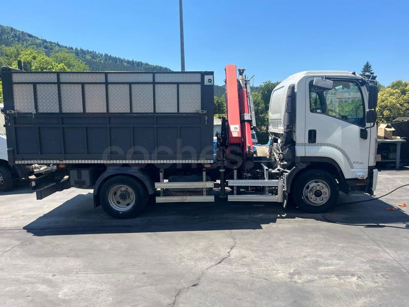

Gama Isuzu
Somos el concesionario oficial Isuzu de Bizkaia. Te ayudamos a elegir modelo y carrocería.

Pick-up 4x4
Isuzu D-Max
El pick-up de trabajo de Isuzu, con cabina simple (Single), extendida (Space) o doble (Crew). Las unidades nuevas llevan 5 años de garantía.
- D-Max Single
- D-Max Space
- D-Max Crew
Nuevo desde37.700 € IVA incl.

Camión ligero
Isuzu Serie N
Chasis para volquete, caja abierta, grúa o isotermo, con tres cabinas: Easy, Comfort y Crew (hasta 7 plazas). Las versiones de 3.500 kg se conducen con carné B.
km 0 desde36.018 € + IVA

Camión medio
Isuzu Serie F
Hasta 14 toneladas, para obra, servicios municipales y equipos con grúa.
PrecioSegún configuración